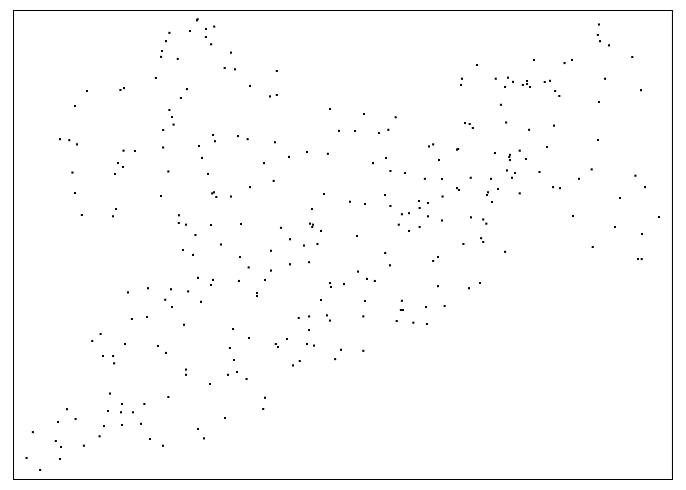
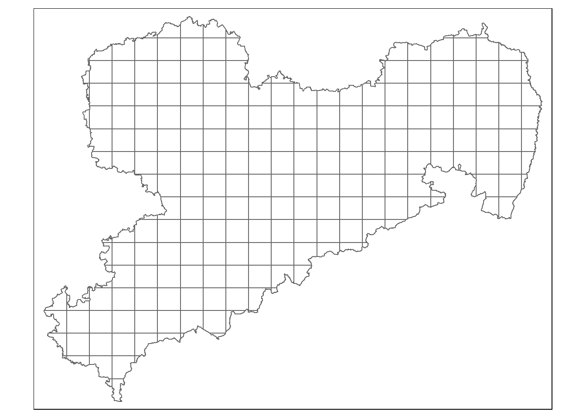
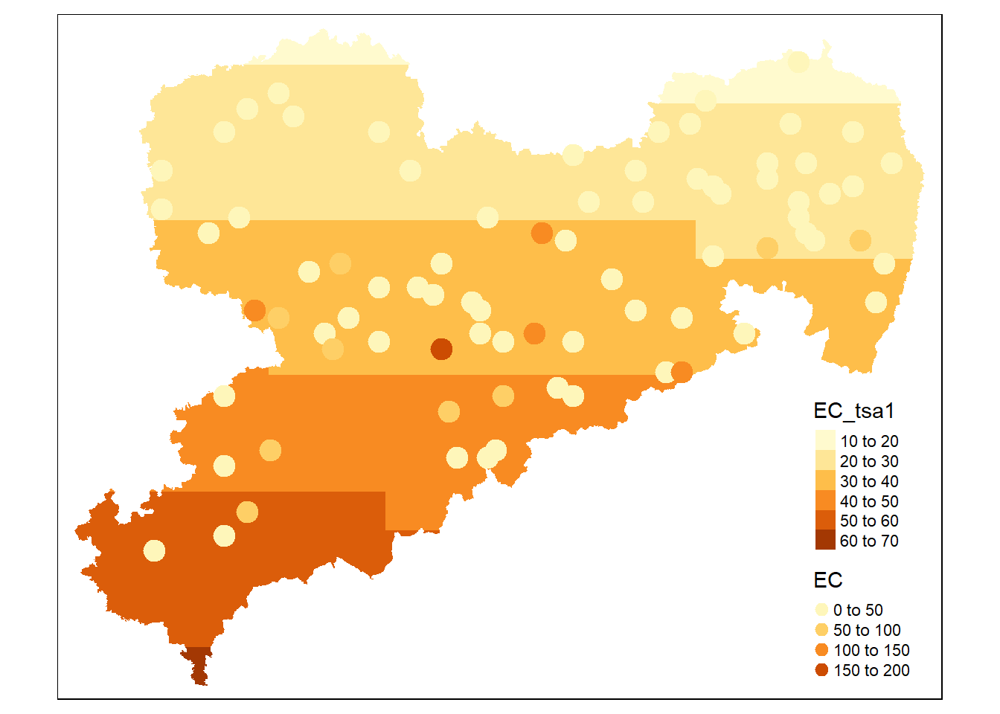
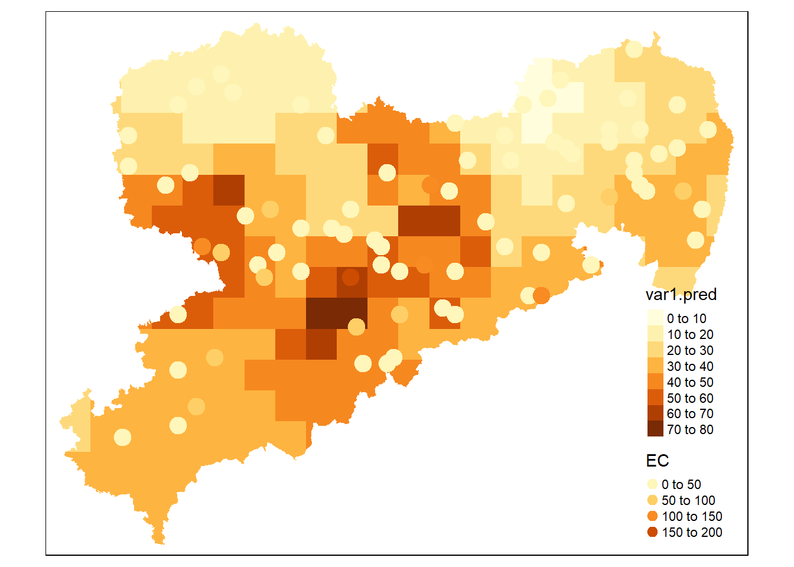
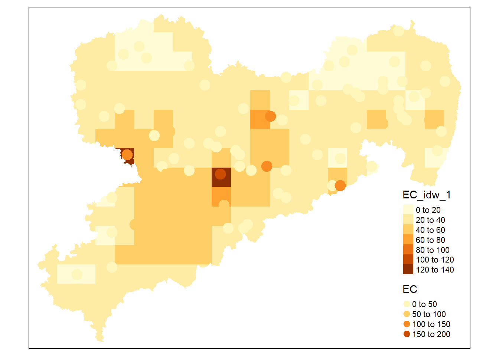
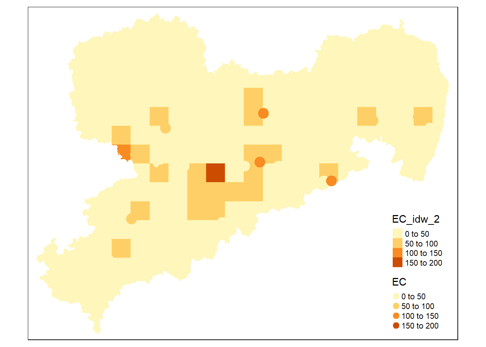
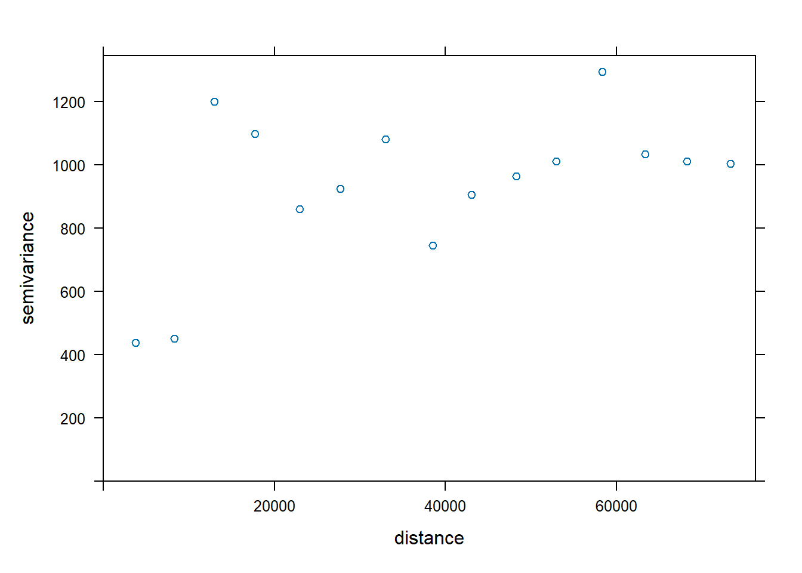
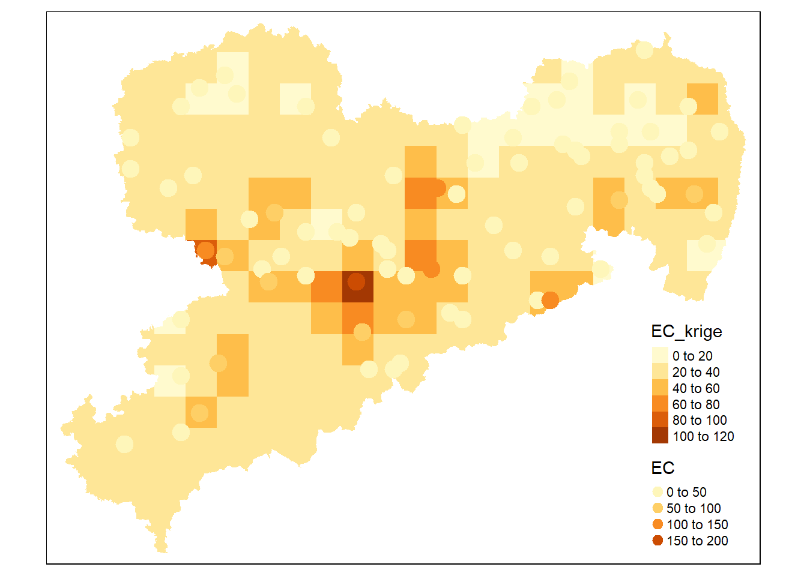

Chapter 4 Interpolation
In this tutorial, you will learn how to use R to apply different interpolation methods to your data sets.
We will use couple of R packages that are familiar to us, like sf and mapview but also some new ones.
Most notably, we will use fields (Douglas Nychka et al. 2021) for splines and gstat (Gräler, Pebesma, and Heuvelink 2016) as well as automap (Hiemstra et al. 2008) for distance weighting.
library(automap)
library(ggplot2)
library(sf)
library(sp)
library(dplyr)
library(fields)
library(gstat)
library(tmap)
library(magrittr)
library(mapview)4.1 The data
We will use the LUCAS soil data. LUCAS is an acronym for Land Use/Land Cover Area Frame Survey. This data base contains approximately 20.000 soil samples from all EU27 countries with the exceptions of Romania and Bulgaria. You can download a subset of the LUCAS data base I created for this course here.
Next, we load the LUCAS data.
As always, we first inspect the new object.
## [1] "sf" "data.frame"The glimpse() function from the dplyr package is similar to the str() from base R.
## Rows: 79
## Columns: 23
## $ Point_ID <int> 44743044, 44763132, 44763142, 44…
## $ Coarse <int> 34, NA, NA, NA, 23, NA, NA, NA, …
## $ Clay <int> 22, NA, NA, NA, 22, NA, NA, NA, …
## $ Sand <int> 26, NA, NA, NA, 18, NA, NA, NA, …
## $ Silt <int> 52, NA, NA, NA, 60, NA, NA, NA, …
## $ pH_CaCl2 <dbl> 5.4, 6.5, 6.6, 7.3, 5.3, 6.5, 6.…
## $ pH_H20 <dbl> 5.77, 6.55, 6.82, 7.70, 5.53, 6.…
## $ EC <dbl> 8.52, 22.00, 17.34, 24.90, 38.90…
## $ OC <dbl> 36.3, 19.9, 15.7, 20.6, 34.1, 17…
## $ CaCO3 <int> 0, 2, 0, 16, 0, 1, 0, 2, 0, 0, 0…
## $ P <dbl> 60.0, 48.2, 67.7, 4.6, 45.0, 44.…
## $ N <dbl> 4.1, 2.1, 1.8, 0.9, 4.3, 1.9, 1.…
## $ K <dbl> 103.4, 192.1, 265.8, 90.1, 328.2…
## $ LC <chr> "E10", "B11", "B11", "C10", "E20…
## $ LU <chr> "U111", "U111", "U111", "U120", …
## $ NUTS_0 <chr> "DE", "DE", "DE", "DE", "DE", "D…
## $ NUTS_1 <chr> "DED", "DED", "DED", "DED", "DED…
## $ NUTS_2 <chr> "DED4", "DED5", "DED5", "DED5", …
## $ NUTS_3 <chr> "DED44", "DED52", "DED53", "DED5…
## $ LC0_Desc <chr> "Grassland", "Cropland", "Cropla…
## $ LC1_Desc <chr> "Grassland with sparse tree/shru…
## $ LU1_Desc <chr> "Agriculture (excluding fallow l…
## $ geometry <POINT [°]> POINT (12.15614 50.48765),…We use the tmap package to display the data on a map.
Note that interactive maps are generally better to explore your data.
For the sake of stability, I have stuck to static maps for this book.
To turn all your subsequent tmaps interactive use tmap_mode("view").

For later maps, we need the boundaries of the German federal state Saxony.
We get it from the Database of Global Administrative Areas (GADM), which we have used these data for Germany before (gadm36_DEU_3_pk.gpkg).
You can download them here.
You can always query other countries or resolutions by following this tutorial.
## Reading layer `gadm36_DEU_3_pk' from data source
## `C:\Users\jonat\Documents\001_Uni\002_teaching\online books\book_spatial_data_science_in_R\data\gadm36_DEU_3_pk.gpkg'
## using driver `GPKG'
## Simple feature collection with 4680 features and 16 fields
## Geometry type: MULTIPOLYGON
## Dimension: XY
## Bounding box: xmin: 5.866251 ymin: 47.27012 xmax: 15.04181 ymax: 55.05653
## Geodetic CRS: WGS 84
4.2 Proximity Polygons
Let’s begin with proximity polygons, also known as Voronoi polygons. These are perhaps the simplest way to fill space between our points. Creating them in R is straightforward - we just use the st_voronoi() function. Think of it like drawing boundaries where each polygon contains all areas that are closest to its central point. If you’ve ever seen a map showing school districts, you’ve probably seen Voronoi polygons in action!
## Warning in st_voronoi.sfc(st_geometry(x),
## st_sfc(envelope), dTolerance, : st_voronoi does
## not correctly triangulate longitude/latitude dataWhen we run this code, we’ll get a warning message telling us that we should use projected coordinates for better accuracy. That’s why we’ll transform our data from the WGS84 coordinate system (which uses latitude and longitude) to the [Lambert Azimuthal Equal Area](https://pro.arcgis.com/en/pro-app/latest/help/mapping/properties/lambert-azimuthal-equal-area.htm#:~:text=Lambert%20azimuthal%20equal%2Darea%20is%20an%20equal%2Darea%20(equivalent,the%20center%20of%20the%20projection.) projection.
With the following code we’ll create Voronoi polygons around our sampling points in lucas and then trim them to match the boundary of Saxony.
This requires a few steps:
1. First, we used st_union() to combine all the individual points in lucas into a single MULTIPOINT object.
2. Next, st_voronoi() creates the Voronoi polygons around these points, giving us a GEOMETRYCOLLECTION.
3. Finally, we use st_collection_extract() to pull out just the polygons we want from this collection.
Tip: Try running these commands one at a time and examine what each step produces. It’s a great way to understand how each function transforms your data!
voroni <-
lucas %>%
st_union() %>%
st_voronoi() %>%
st_collection_extract() %>%
st_intersection(y= saxony) %>%
st_as_sf()Next, we’ll add the electrical conductivity (EC) values to each polygon. Think of EC as our example variable - it’s just the data we want to map across our area. We match each polygon with its closest measurement point using the st_nearest_feature() function, which essentially says “take this polygon and find the sampling point that belongs to it.”
Now we have the final product also shown in the lecture:
Exercise
Create proximity polygons for the variable Phosphorus
4.3 Trend Surface Analysis
Trend surface analysis (TSA) helps us understand how our measurements (in this case, EC) change across space. It’s just a regular regression analysis where we use location coordinates to explain these changes. Think of it as fitting a mathematical surface over our study area!
We’ll use R’s standard regression function lm() for this. First though, we need to get the X and Y coordinates of our sampling points from the lucas dataset using the st_coordinates() function.
coords <- st_coordinates(lucas)
x.coord <- coords[,1]
y.coord <- coords[,2]
lucas <- mutate(lucas,
x = x.coord,
y = y.coord
)Now we’ll try two types of regression models to see which better fits our data:
- A simple linear regression (which will give us a tilted plane)
- A polynomial regression of second degree (which can capture more complex curves and valleys in our data)
Don’t worry if you’re not familiar with polynomial regression - just think of it as allowing our surface to bend and curve instead of staying flat! While a simple linear regression has the equation \(y_i = \alpha + \beta x_i + \epsilon_i\) a polynomial regression adds the quadrat of same predictor: \(y_i = \alpha + \beta_1 x_{i} + \beta_{2}x_i^2 + \epsilon_i\). Here \(i\) is just the index for the sampling site.
Now comes the fun part - using our model to predict values at locations where we don’t have measurements! We’ll try this in two ways:
1.By creating random points scattered across Saxony (like throwing confetti over a map)
2.By creating a regular grid of points (like laying a checkerboard pattern over Saxony)
Each approach has its uses - random points might help us understand the overall pattern, while a regular grid is great for making smooth maps.
We’ll create random points using the st_sample() function. It needs two main things:
1. The area where points can be placed (in our case, Saxony)
2. How many points we want (we’ll create 300)
That’s all it takes to distribute 300 random points across our study area!

Before we can add our predicted values, we need to do some data formatting: Our random_points object is currently just a geometry column (class sfc, simple feature column). To add more data to it, we need to convert it to a proper spatial data.frame using st_as_sf(). During this conversion, our geometry column gets named “x” - not very informative! We’ll use the dplyr package’s rename() function to give it the more conventional name “geometry”. Lastly, we extract coordinates of the random points using st_coordinates(). These are directly added back to random_points with the mutate function from dplyr. This functions adds new variables to data sets.
random_points <-
random_points %>%
st_as_sf() %>%
rename(geom = x) %>%
mutate(x = st_coordinates(random_points)[,1],
y = st_coordinates(random_points)[,2])We predict the EC for these coordinates with predict(). Predict() takes two arguments: 1. A model used to make the prediction (tsa1 and tsa2); 2. new values for the dependent/ predictor variables. In our case, the new predictor values are the spatial coordinates of the points.
random_points$EC_tsa1 <- predict(tsa1, random_points)
random_points$EC_tsa2 <- predict(tsa2, random_points)Let’s have a look at the results. On the following map circles are true observations and diamonds are predicted values.
breaks = c(0, 10, 15,20, 25, 30, 35, 40, 170)
tm_shape(saxony) +
tm_polygons() +
tm_shape(random_points) +
tm_dots(col = "EC_tsa1", shape = 23, size = .5, breaks = breaks) +
tm_shape(lucas) +
tm_dots(col = "EC", shape = 21, size = .5, breaks = breaks) +
tm_layout(legend.outside = TRUE)tm_shape(saxony) +
tm_polygons() +
tm_shape(random_points) +
tm_dots(col = "EC_tsa2", shape = 23, size = .5, breaks = breaks, midpoint = NA) +
tm_layout(legend.outside = TRUE) +
tm_shape(lucas) +
tm_dots(col = "EC", shape = 21, size = .5, breaks = breaks)
Exercise
Predict phosphorus concentrations at 150 random locations in Saxony with a non-polynomial trend surface analysis.
Now let’s create a grid of regularly spaced points. First, we need to find the rectangular box that completely contains Saxony. Think of it like drawing the smallest possible rectangle around Saxony’s shape - we can get this bounding box using the st_bbox() function.
## xmin ymin xmax ymax
## 4453658 3009238 4672526 3178781With st_as_sfc() we can create a polygon from the bounding box.
saxony_bbox_sfc <- st_as_sfc(saxony_bbox)
tm_shape(saxony_bbox_sfc) + tm_borders() + tm_shape(saxony) + tm_polygons()
Now we’ll create a regular grid using st_make_grid(). Since our coordinate system is in meters (LAEA projection), we can directly specify the grid size in real-world units. We’ll make square cells that are 10 kilometers on each side. Think of it like laying a giant checkerboard over Saxony, where each square is 10 km × 10 km.
saxony_grid <- st_make_grid(
x = saxony_bbox_sfc,
cellsize = c(1e4,1e4),
what = "polygons"
) %>%
st_as_sf()
tm_shape(saxony_grid) + tm_borders()
Now we need to crop the grid to Saxony.

Great! But we have a small challenge: our grid gives us squares (polygons), but we need single points for our predictions. Each square has four corners and a center point, and we need to choose which points to use. Fortunately, st_make_grid() can give us either: the corner points of each grid cell or the center points (centroids) of each cell.
Both options work well.
saxony_grid_corner <-
st_make_grid(
x = saxony_bbox_sfc,
cellsize = c(1e4,1e4),
what = "corners") %>%
st_as_sf() %>%
st_intersection(saxony)## Warning: attribute variables are assumed to be
## spatially constant throughout all geometriestm_shape(saxony_grid) + tm_borders() +
tm_shape(saxony_grid_corner) + tm_dots(col = "red", size = .6)
saxony_grid_centroid <-
st_make_grid(
x = saxony_bbox_sfc,
cellsize = c(1e4,1e4),
what = "centers") %>%
st_as_sf() %>%
st_intersection(saxony)## Warning: attribute variables are assumed to be
## spatially constant throughout all geometriestm_shape(saxony_grid) + tm_borders() + tm_shape(saxony_grid_centroid) + tm_dots(col = "red", size = .6)
We could also have extracted the centroids from the polygons with the following code:
Now comes the satisfying part: we’ll predict values for each grid center point, and then map these values back to their grid squares for visualization. Think of it like filling in each square of our checkerboard with a color that represents our predicted EC value! Note that this is like a combination of proximity polygons and trend surface analysis. TSA predicts the values at each (point) location which is then interpolated to the grid. With regularly spaced points, the proximity polygons are a regular grid.
saxony_grid_centroid %<>%
mutate(
x = st_coordinates(saxony_grid_centroid)[,1],
y = st_coordinates(saxony_grid_centroid)[,2]
)
saxony_grid_centroid$EC_tsa_1 <- predict(tsa1, saxony_grid_centroid)
saxony_grid_centroid$EC_tsa_2 <- predict(tsa2, saxony_grid_centroid)
saxony_grid$EC_tsa1 <- saxony_grid_centroid$EC_tsa_1
saxony_grid$EC_tsa2 <- saxony_grid_centroid$EC_tsa_2
tm_shape(saxony_grid) + tm_fill(col = "EC_tsa1") +
tm_shape(lucas) + tm_dots(col = "EC", size = 1)
4.4 Splines
Let’s explore another interpolation method: splines! We’ll use a special type called thin plate splines, which you can think of as trying to bend a flexible surface to fit through all our measurement points. We’ll use the Tps() function from the fields package - all it needs are our point coordinates and our EC values to work its magic.
Just like before, we’ll use the predict() function to estimate EC values at our grid points. The function gives us a matrix of predictions, which we’ll convert into a simple vector of numbers using as.numeric().
tps_prediction <- predict(tps_fit, st_drop_geometry(saxony_grid_centroid[, c("x", "y")]))
saxony_grid$EC_tps <- as.numeric(tps_prediction)
Exercise
Fit a thin plate spline to the phosphorus data
4.5 Weighted averaging
Now let’s explore methods that consider how far points are from each other. We’ll start with a simple one called k nearest neighbors (kNN). Imagine you want to guess the EC value at a new location:
- kNN finds the \(k\) closest measurement points to your location
- It then simply takes their average to make a prediction
- Only these \(k\) nearest points matter - all other points are ignored, no matter how close or far they are
We’ll use the gstat package for this and all our other weighted averaging methods. Here’s how we set it up:
- We create a model using the
gstat()function
- Use
-1in the formula to say “just find the mean value, I don’t care about the intercept”
- Set
locationsto tell it where our points are
- Use
nmaxto specify \(K\) (how many neighbors to consider)
- Set
idp(inverse distance parameter) to control distance weighting
For our example, we’ll use the 5 nearest neighbors (nmax = 5) and give them all equal weight (idp = 0, meaning distance doesn’t affect the weights).
knn_mod <- gstat(formula=EC~1,
locations=lucas,
nmax=5,
set=list(idp = 0))
knn_pred <- predict(knn_mod, saxony_grid)## [inverse distance weighted interpolation]
For inverse distance weighting (IDW) the model construction and prediction are packaged into a single function (idw).
## [inverse distance weighted interpolation]## [inverse distance weighted interpolation]

Exercise
Try different values for the distance weighting parameter when predicting phosphorus concentrations.
4.6 Kriging
While IDW provides a straightforward way to consider distance in our predictions, it has some limitations. It doesn’t account for the spatial patterns in our data - it just assumes that closer points are always more important. Kriging takes a more sophisticated approach: instead of using fixed distance-based weights, it learns the spatial structure of our data from the variogram and uses this information to determine optimal weights. Let’s see how this works!
First, we’ll calculate the empirical variogram, which helps us understand how variance in our data relate to distance. While gstat is getting better at working with modern sf objects, it works most reliably with the older sp format. Don’t worry though - converting between these formats is super easy and takes just one function!
Now we can plot a variogram cloud and fit the empirical variogram with the variogram() function.
As with the idw() function, we don’t assume that there is a spatial trend and construct a variogram for a constant mean value.


To find the best variogram model we can either fit a selection of models manually …
# spherical
v_mod_sph <- fit.variogram(
object = v_emp,
model = vgm("Sph")
)
# exponential
v_mod_exp <- fit.variogram(
object = v_emp,
model = vgm("Exp")
)
… or we use the automap package to automatically fit and compare multiple models.
With this variogram, we can use kriging to interpolate the EC values.
kriging <- krige(
formula = EC ~ 1,
locations = lucas_sp,
newdata = saxony_grid_centroid,
model = autovar$var_model
)## [using ordinary kriging]saxony_grid$EC_krige <- kriging$var1.pred
saxony_grid$EC_krige_variance <- kriging$var1.var
tm_shape(saxony_grid) + tm_fill(col = "EC_krige") +
tm_shape(lucas) + tm_dots(col = "EC", size = 1)
Lastly, we can look at the kriging variance wish shows our uncertainty for the predicted values. The further we are removed from measured points we larger the uncertainty.
Exercise
Use the autofitVariogram() function to fit a Kirging model to the phosphorus data.